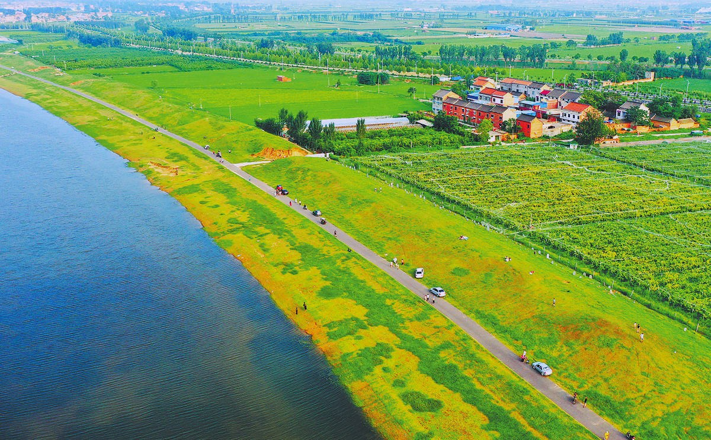

管理后台
县/乡/村三级后台管理，党建、村务、治理、产业全流程数字化。
党建统领
我的乡村
三务审核
网格治理
产业管理
千村千面
认养农业
数据看板
覆盖县、乡、村三级联动，打通管理后台、村民移动端、村干部移动端、监测大屏呈现四端协同，让乡村治理有温度、有数据、有实效。
从县乡村三级后台到村民与干部的随身移动端，再到一图掌控的监测大屏，四端数据互通、角色各司其职。
县/乡/村三级后台管理，党建、村务、治理、产业全流程数字化。

村务公开、办事服务、积分兑换、随手拍，村民办事一站式。
移动巡查、任务管理、诉求处理、数据看板，村干部随身工具。
从县级全局统筹，到乡级承上启下，再到村级落地服务，三级权责清晰、数据上下贯通。
全局视角统筹全县数字乡村建设
承上启下，统筹本乡党建与治理
落地到户，服务村民最后一公里

以益农镇幸福村为试点，打造数字乡村标杆。从主导产业到阳光村务，从网格治理到积分超市，探索可复制的乡村数字化路径。